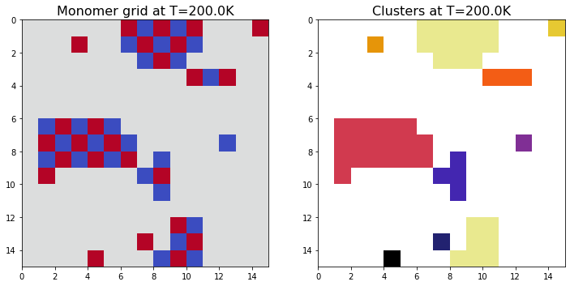
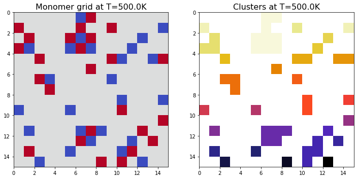
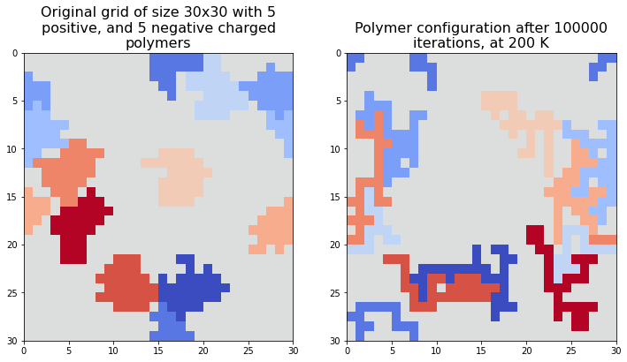

Most organelles in a cell are surrounded by a membrane, but some are not. They are dense droplets of molecules that have gathered on their own. In this project we looked at two conditions that are important for forming these structures: electrostatic attraction between charged molecules, and the fact that physical systems tend towards the lowest possible energy. This is too complex to solve analytically, so we used Monte Carlo simulations.
The setup
We place \(2M\) charged monomers on an \(N \times N\) grid, where \(M\) are positive (blue) and \(M\) are negative (red). The grid has periodic boundary conditions, so the column to the right of the rightmost column is the leftmost column, and the same for the rows. This is the same as the surface of a torus, and it means there are no edges in the system.
The energy
We only include interactions between neighbouring monomers, meaning the four squares above, below, left and right. For each neighbouring pair we use Coulomb's law with the charge of an electron, screened by water:
$$\begin{gathered}E = \frac12 \sum_{i}\sum_{j \in \mathcal N(i)} \alpha\, q_i q_j, \\ \alpha = \frac{e^2}{4\pi\varepsilon_0\varepsilon_r a^2},\end{gathered}$$with \(q \in \{-1, +1\}\), relative permittivity \(\varepsilon_r = 78\) for water and grid spacing \(a = 23\,\mu\text{m}\). Opposite charges next to each other give negative energy, and equal charges give positive energy. The factor \(\tfrac12\) is there because each pair is counted twice. In reality there is an interaction between all the monomers, but it decreases quickly with distance and the water screens it further, so this simplification gives a relatively small error.
The Metropolis algorithm
In each step we pick a random monomer and a random direction. If the square in that direction is occupied, nothing happens. Otherwise we compute the change in energy \(\Delta E\), and accept the move with probability
$$P(\text{accept}) = \min\!\left(1,\; e^{-\Delta E / k_B T}\right).$$Moves that lower the energy are always accepted, and moves that increase it are accepted with a probability that is higher when the temperature is high. If we run this for long enough, the states follow the Boltzmann distribution \(P(\text{state}) \propto e^{-E/k_BT}\), where low energy states are the most likely.
If you change the temperature, you can see that moves that lower the energy (left of zero) are always accepted, while moves that increase it become exponentially less likely, especially at low temperature.
The main part of our code looks like this:
delta_E = new_contribution - old_contribution
if delta_E <= 0 or random.random() <= np.exp(-beta * delta_E):
points[random_index] = move_to # accept
return delta_E
else:
grid[random_monomer] = charge # revert
grid[move_to] = 0.
return 0.Only the neighbours of the moved monomer change, so \(\Delta E\) only needs four lookups and not the whole grid. Together with Numba's @njit, this made it possible to run millions of steps.
Temperature
We ran 50,000 steps on a 15 × 15 grid with 25 positive and 25 negative monomers, at two different temperatures:


At 200 K the system forms large clusters. At 500 K it seems to be indifferent to the energy, and it looks about as disordered at the end as at the start.
Burn-in
To measure the average cluster size for temperatures between 100 K and 1000 K, each run first has to reach equilibrium. Systems at low temperature are slow, since moves that increase the energy are rarely accepted, so we let the burn-in decrease with temperature:
$$\begin{gathered}t_{\text{equil}}(T) = t_{\max}\,e^{-s(T - T_l)} + C, \\ t_{\max} = 10^6,\; s = \tfrac{1}{200},\; T_l = 100\text{ K},\; C = 10^4.\end{gathered}$$The constants were chosen by trying different values. After the burn-in we took 1000 measurements with 1000 steps between them. The average cluster size decreased as the temperature increased. At low temperatures, two runs also gave quite different results, which suggests that the coldest systems had not fully reached equilibrium.
Polymers
Next we joined the monomers into polymers, which are chains of \(L\) monomers that move together. Monomers in the same polymer do not interact with each other. We tried two types of moves. With rigid moves the whole polymer moves one square without changing shape, and with medium flexibility moves parts of the polymer can move while it stays connected.

The flexible polymers became longer and wrapped around each other. This affects the energy, since a longer border between polymers with opposite charge gives a lower energy. The rigid polymers cannot do this, so they end up with a higher energy. We also varied the length \(L\) from 3 to 39 and measured how the number and size of the clusters changed.
Nothing in the code tells the molecules to form droplets, and the structure comes only from the energy and the random moves.
Try it yourself
This is a live version of the simulation. Each step picks a random molecule and tries to move it one square. If you lower the temperature, clusters form, and if you raise it, they break up again.
Lower the temperature to about 150 K and wait, and then raise it to 700 K. At low temperature the molecules form clusters and the energy goes down, and at high temperature the clusters break up.
energy over time (lower is more ordered)
The grid has periodic boundary conditions, as in the original simulation, so there are no edges.
The notebook is on GitHub.